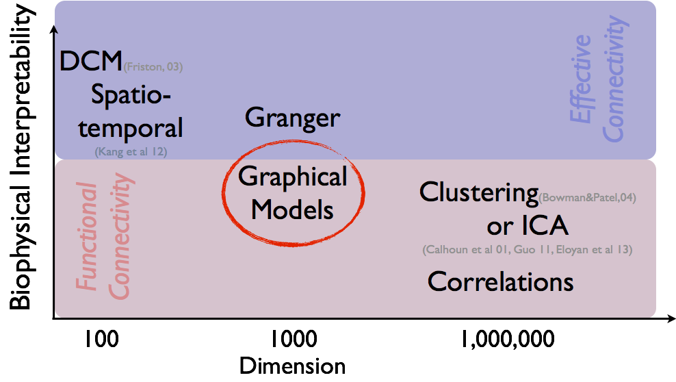
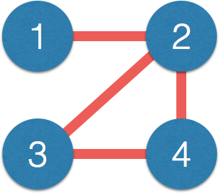
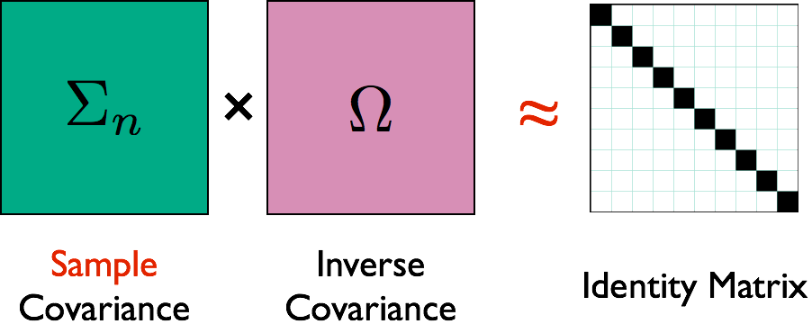
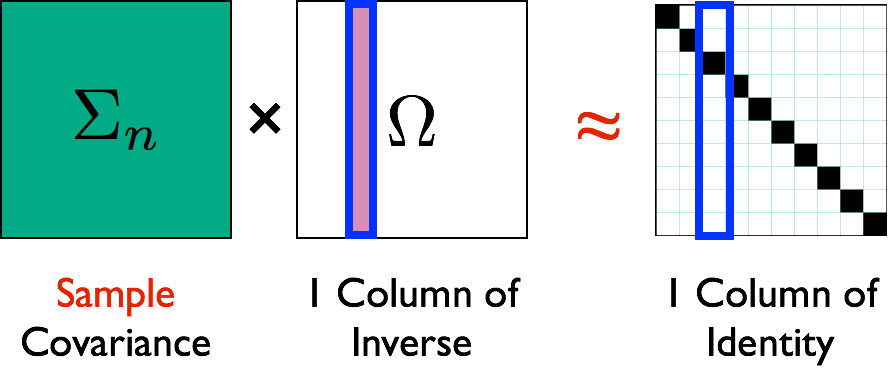
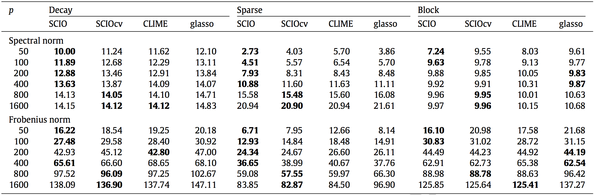

Graphical Models for Brain Connectivity:
Algebraic (Non-likelihood) Methods
Xi (Rossi) Luo
Department of Biostatistics
Center for Statistical Sciences
Computation in Brain and Mind
Brown Institute for Brain Science

February 23, 2016
Funding: NSF/DMS 1557467; NIH P20GM103645, P01AA019072, P30AI042853; AHA

$10^{11}$ neurons
Ex: DTI, DWI, ...
or optogenetics modeling Luo et al, 16

$10^4$ genes, $10^6$ SNPs
Ex: Gene networks Liu & Luo, 15

$10^6$ functional MRI voxels
fMRI


- Task fMRI: perform tasks under fMRI scanning
- Resting-state fMRI: "rest" in scanner
This talk: resting-state fMRI

fMRI data: blood-oxygen-level dependent signals from each
fMRI Studies
Sub 1, Sess 1

Time 1
2
…
~300
⋮
Sub i, Sess j
…
⋮
Sub ~100, Sess ~4
…
$100 \times 4 \times 300 \times 10^6 \approx 100 $ billion data points
Data Matrix
- $X_{n \times d}$: $n$ observations from $d$ voxels
- Functional segregation: voxel clusters (ROIs)
- Dimension reduction: $X_{n\times p}$—averages from $p$ ROIs
- Reduced computation: $p \approx 10^2 \ll d \approx 10^6$
- Statistically: introduce bias and reduce efficiency Luo, 14
- Scientifically: ROI definitions can vary greatly
- Still a popular approach due to simplicity (will pursue in this talk)


Brain Connectivity
-
Given $X_{n\times p}$, infer connections between $p$ ROIs. - Intuition: connected ROIs have similar fluctuations
- Stat objective: infer the
direct network connections - "small n, large p": science, theory, method, computation, and data science
- Temporal dependence removed or small
- Low sampling rate: 300 time points, ~2 seconds apart
- Standard preprocessing (AR models) Lindquist, 06; Bownman, 14
- Causal nonparametric testing Luo et al, JASA 12
Graphical Models
Overview
- Data: $n \times p$ matrix of $n$ activities from $p$ voxels
- Methods: biophysical interpretability $\propto$ scalability${}^{-1}$
- Correlation
- PCA, independent component analysis (ICA) Calhoun, Guo, and colleagues
- Graphical models (inverse covariance)
- Granger causality, autoregressive modelsDing, Hu, Ombao, and colleagues
- Bayesian models
- Dynamic models (partial differential equations) Friston and colleagues
Selected Methods and Opinions

Intro: Graphical Models
- For simplicity, $X\sim^{\textrm{iid}} N(0, \Sigma_{p\times p})$
- All data are centered and scaled usually
- Assumptions can be relaxed (e.g. non-normal data, spatialtemporal correlations), with modifications of our methods
- Interested in estimating $\Omega = \Sigma^{-1}$ because $$ \Omega_{ij} = 0 \quad \iff \quad \mbox{variable } i \bot j \, | \, \mbox{others}$$
- Network representation: each variable is a node $$ \Omega_{ij} = 0 \quad \iff \quad \mbox{No edge node } i \not \sim j $$
GM vs Correlation
- Matrix $\Omega$ $\iff$ network:
$$\small \Omega = \begin{pmatrix} 1 & 0.2 & {\color{red} 0} & {\color{red} 0}\\ 0.2 & 1 & -0.1 & 0.1\\ {\color{red} 0} & -0.1 & 1 & 0.3\\ {\color{red} 0} & 0.1 & 0.3 & 1\\ \end{pmatrix} $$$\iff$
 - Correlation $\Sigma$ has few zero entries (empirically)
- Path $1-2-3$, $1$ and $3$ correlated but not connected directly
- Correlation measures indirect connections
-
Direct connections closer to causal interpretation - $\Omega$ also related to (known as) partial correlation
Review: Sparse GM Frameworks
- Sample cov $\hat{\Sigma}$ non-invertible when $p>n$
- Bad "global" matrix properties: eigenvalues converge badly
- Assume sparse $\Omega$: interpretability and stability
- Penalized conditional likelihood Meinshausen & Bulmann, 06
- Penalized (e.g. $\ell_1$ or LASSO) regression: $X_j \sim X_{-j}$
- Colinearity/correlation makes variable selection challenging
- Penalized likelihood using $\hat{\Sigma}$ Yuan & Lin, 07; Banerjee et al, 07; Friedman et al, 08
- Matrix computation, misspecified likelihood
- Slow convergence due to bad global convergence
- Algebraic (non-likelihood) approaches JASA, 11; JMVA 15
- Leveraging good "local"/element-wise convergence
Algebraic Approach 1: CLIME
- CLIME Cai, Liu, Luo, JASA, 11 $$ \min \| \Omega \|_1 \quad \textrm{subject to: } \lVert \hat{\Sigma} \Omega - I \rVert_\infty\le \lambda $$
- $\| \Omega \|_1 = \sum_{ij} \| \Omega_{ij} \|$, $\| M \|_\infty = \max_{i,j} \| M_{ij} \|$.
- Symmetrication: $\Omega = \min(\Omega, \Omega^T)$
- Vector computation: solve columns $\Omega_{\cdot j}$ separately
- Algorithm: linear programming
- Unique solutions, and fast algorithms
- Penalty choice (LASSO) not critical
Illustration

Illustration

Theory
- Assumptions: large $p = O(\exp(n))$ and signal$>\lambda$
-
Faster convergence rates than penalized likelihood- CLIME $n^{-1/2} \log^{1/2} p$ vs likelihood $n^{-1/2} p^{\xi}$ in polynomial-tail dist
- Minimax optimal Cai et al, 14
- Works for semiparametric distributions Liu, Lafferty, Wasserman, and colleagues
-
Weaker assumptions than penalized likelihood- CLIME works under stronger "colinearity"
- Limitations: tuning parameter selection and computation
Algebraic Approach 2: SCIO
- SCIO Liu, Luo, JMVA, 15 $$ \min_{\mathbf{\beta} = \Omega_{\cdot j}}\left\{ \frac{1}{2}\mathbf{\beta}^{T}\hat{\Sigma}\mathbf{\beta}-\mathbf{\beta}^{T}e_{i}+\lambda\left\Vert \mathbf{\beta}\right\Vert _{1}\right\} $$
- Generalization of conjugate gradient loss
- Faster computation via convex programming
-
Smaller (constants) than CLIME- Better rates than penalized likelihood
New CV and Its Theory
- Random split (training/validating): $n_\mbox{tr} \asymp n_\mbox{val} \asymp n$
- Select tuning $\lambda_i$ on a grid (size $N$) to min loss $$\hat{R}(\lambda_i)= \frac{1}{2}(\hat{\beta}^{\mbox{tr}}(\lambda_i))^{T}\hat{\Sigma}_{\mbox{val}} \hat{\beta}^{\mbox{tr}}(\lambda_i)-e^{T}\hat{\beta}^{\mbox{tr}}(\lambda_i)$$
- Use selected $\hat{\lambda}$ above for SCIO estimator $\hat{\Omega}_{\mbox{cv}}$
Simulations
Matrix Loss Comparison

SCIO has
Network Recovery Comparison
Truth
SCIO
Glasso
Heatmaps: black-nonzero over 100% runs; white-100% zero.
fMRI Simulation
- GM is among the
top 3 methods of 30+ by massive dynamic simulations (600+ citations) Smith et al, 10 - Using their data,
SCIO hasbetter ROC of recovering the connections (non-zero $\Omega$), vs penalized likelihood (GLASSO)
Real Data
ADHD
- ADHD affects about 10% children in US
- Data from the ADHD-200 project
- fMRI data from 61 Healthy, 22 ADHD cases
- 116 brain regions (AAL), 148 observations
Heatmaps: black-nonzero over 100% subs; white-100% zero.
SCIO:
SCIO:
Another Data Example: HIV

- Predicting HIV/non-HIV brains using gene exprs using LDA ($\Omega$)
-
SCIO :higher pred accuracy
Summary
- New loss functions without likelihood
- Improved accuracy and theory
- Fast computation
- Optimization: build methods to recover patterns
- A step for big and complex (network) data
- Accurate network recovery for brain networks
- For a broad range of distributions and data
- Utility: diagnosis and personalized medicine
- Limitations and future work: complex models, faithful dimension reduction, implementation
Collaborators
Tony Cai
Univ of Penn
Weidong Liu
Shanghai JiaoTong Univ
References
- Bunea, Giraud, X Luo. Community Estimation in G-models via CORD. Submitted to Annals Stat
- Luo. A Hierarchical Graphical Model for Big Inverse Covariance Estimation with an Application to fMRI. Revision for Biostat
- Luo, Gee, Sohal, Small (2016). A Point-process Response Model for Optogenetics Experiments on Neural Circuits. Stat Med.
- Liu, Luo (2015). Fast and Adaptive Sparse Precision Matrix Estimation in High Dimensions. J Multivariate Analysis.
- Luo et al (2013) Cognitive control and gender specific neural predictors of relapse in cocaine dependence. Brain
- Luo, Small, Li, Rosenbaum (2012). Inference with Interference between Units in an fMRI Experiment of Motor Inhibition. JASA
- Cai, Liu, Luo (2011). A Constrained $\ell_1$ Minimization Approach to Sparse Precision Matrix Estimation. JASA
- R packages: clime, cord, pro, scio